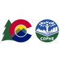

Position
Medical Director, 2023-Present
EDCare
Supervise medical staff across three states at an eating disorder partial hospitalization program, including APP and RNs.
Collaborate with diverse allied health professionals, including psychiatrists, therapists, dieticians, and mellieu managers to create a holistically supportive and healing environment for patients at the program.
Treat emergent and common health conditions occurring in eating disorder patients, including refeeding syndrome and long term consequences of malnutrition.
Coordinate admissions, discharge, and care plans for patients ranging from Division 1 athletes to active duty military to Medicaid recipients

Medical Epidemiologist, 2023-2024
Communicable Disease Branch, Colorado Department of Public Health and Environment
Regularly deliver presentations to 50+ member physician groups about antibiotic resistant gonorrhea, Long COVID, syphilis, and other topics
Using RShiny, design and implement mechanism to route Health Alerts to all healthcare providers in the state of Colorado based on practice specialty and location
Coordinate release of pharmaceuticals from strategic national stockpile for emerging public health threats, coordinating between CDC and community providers.
Serve as subject matter expert for review of school illness guidelines for Colorado, coordinating with stakeholders across the executive branch
Science Officer, 2023-Present
Center for Infectious Diseases, California Department of Public Health
Supports scientific initiatives to inform policy and evidence based decision making by liasing between internal SME and leadership
Serves as a dedicated resource to cultivate critical partnerships with other health agencies, universities, and external partners to enhance generation of knowledge, access to data, and utilization of and translation of data and evidence into policy, strategies, and operations, and communications
Medical Epidemiologist, 2020-2024
Communicable Disease Branch, Colorado Department of Public Health and Environment
Provided subject matter expertise in areas as diverse as dental care, schools and higher education, and personal services. Integrated data from hospitals, outbreak investigation, scientific literature, and media reports to create detailed reports and recommendations for stakeholders ranging from healthcare providers, policymakers, legislators, superintendents, and members of the general public
Created and managed the COVID Patient Hospitalization Surveillance system, Colorado’s statewide patient-level hospital data collection system for persons admitted with COVID. Conducted ad hoc and scheduled reports in R Markdown.
Implemented and successfully transitioned wastewater surveillance for SARS-CoV-2 across the state.

Clinical Faculty, 2021-2023
UCHealth
Supervise resident physicians during roatations at CDPHE.
Conduct training in opioid medication management and difficult patient encounters, working with standardized patients and medical students nearing graduation.
Member of Residency Advisory Committee for Preventive Medicine Residency

Co-Founder, 2018-Present
Salish Research Group
Our prizewinning analytics team uses contemporary statistical techniques and a deep understanding of both epidemiology and clinical medicine to drive insight in some of the most challenging healthcare issues of our time, from understanding the spread of HIV in an immigrant population to uncovering the factors that drive outcomes of surgical procedures.
Won geopolitical forecasting contest sponsored by IARPA, beating an international field of entrants by most accurately predicting the outcome of international conflicts, weather patterns, domestic and overseas elections, and more
Created a novel solution to deidentify sensitive patient data without losing the ability to perform robust statistical analysis.

Preventive Medicine Resident, 2018-2020
University of Colorado
Treated patients in a variety of contexts, including tobacco cessation clinic, veteran wellness visits, and infectious disease outreach events.
During a large tuberculosis outbreak, served as expert medical resource for the testing and referral of over 300 students, faculty, and staff at a large middle school.
Independently design and execute population-level epidemiological studies for both internal and external stakeholders
Section Editor, 2018-2019
Sketchy Medical
Honing and refining content created by physicians, pharmacists and medical educators to ensure a tonally consistent, clinically relevant, and highly entertaining product.
Incorporated latest clinical research, national guidelines, and expert consensus to ensure comprehensive, accurate, and applicable material.
Epic Implementation Consultant, 2017-2018
UMass Amherst / UNLV
Shepherded clinicians and healthcare staff at two large academic medical centers through the fraught transition from archaic paper-based charting to a modern electronic health medical record system.
Developed and implemented several patient safety monitoring interventions on a large transplant nursing floor, including CLABSI and fall prevention

Intern, Internal Medicine, 2016-2017
UC Davis Health System
I was primarily responsible for diagnosis and coordinating of care plans of up to 12 patients with cross-functional teams of medical professionals; on overnight shifts I covered up to 48 hospitalized patients over three VA hospital floors.
Managed patients throughout the care continuum, from admission, rehab, discharge, and outpatient follow-up and testing.
Discussed and negotiated patient discharge plans at legal hearings, ensuring safe, appropriate, and affordable post-discharge care for patients.
Medical Student, 2012-2016
Case Western Reserve University School of Medicine
- Included rotations at Cleveland Clinic, University Hospital, VA, and large county hospital

Program Evaluation Consultant, 2012
US Army Public Health Command
- Performed an evidence-based evaluation of wellness centers and programming at five US Army bases in Germany, with a goal of improving program effectiveness, capacity, and alignment with guidelines

Master of Public Health, 2011-2013
- Concentration: Public Health Practice
MCAT and ACT Instructor, 2011-2012
The Princeton Review
- Created and delivered 3-hour lectures to a class of 8-20 high school and undergraduate students preparing for MCAT and ACT.
Research Assistant, 2004-2010
Lung Injury Lab, University of Arizona
- Transitional research project to develop a next-generation chemical sensor using technology developed as a result of research into lung injury mechanisms.

Elementary School Teacher, 2010
Bruce Peru
- Wrangled local kindergarten students into learning basic literacy, arithmetic skills using a combination of bribery, horsey rides.

Bachelor of Arts, 2006-2010
University of Arizona
- Double major in Chemistry and Classics

Tennis Court Supervisor, 2007-2008
Campus Wellness, University of Arizona

Dishwasher, 2006
Gentle Ben’s Brewery